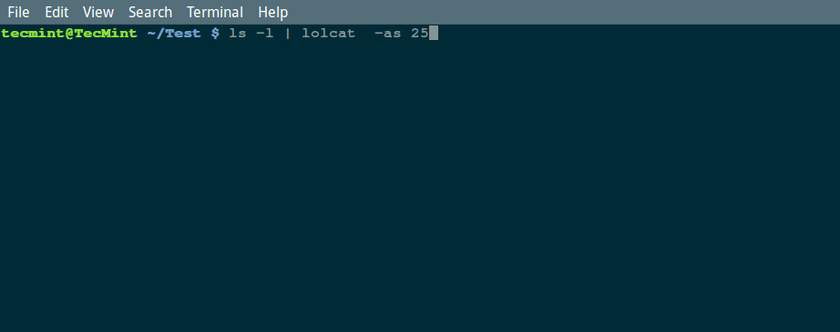

编译自：http://www.tecmint.com/add-colors-to-command-output-terminal-linux/
作者： Aaron Kili
原创：LCTT https://linux.cn/article-8042-1.html
译者： geekpi
本文地址：https://linux.cn/article-8042-1.html
本篇中，我们会展示一个很酷及简单的方法在屏幕中显示彩色的输出，并且可以为了某个原因减慢输出的速度。
lolcat 命令可以满足上面的需求。它基本上通过与 cat 命令类似的方式将文件或标准输入定向到标准输出来运行，覆盖某个命令的默认屏幕输出颜色，并为其添加彩色。
lolcat 可以在大多数现代 Linux 发行版的默认仓库中得到，但是可用的版本有点老。你可以使用下面的指导来从 git 仓库中安装最新的 lolcat 版本。
lolcat 安装后，基本的 lolcat 语法是：
$ lolcat [options] [files] ...
有几个选项可以控制它的行为，下面是一些我们在本指导中会强调的几个最重要的标志：
-a - 将每行输出都显示动态效果。-d – 指定动画效果间隔（显示下一行之前的帧），默认是 12。-s – 它指定了动画效果的速度（帧速-每秒的显示帧数），默认是 20。-f – 强制显示彩色以防止标准输出不是 tty。你可以在 lolcat 的 man 页可以找到更多的选项：
$ man lolcat
要使用 lolcat，直接将相关命令的输出通过管道给 lolcat，即可见证魔法。
比如：
$ ls -l | lolcat -as 25

除此之外你也可以改变默认速度，在下面的命令中，我们会使用一个相对较慢的速度，每秒显示 10 帧：
$ ls -l | lolcat -as 10
你可以使用任何命令结合 lolcat 在 Linux 终端中输出彩色结果，比如 ps、date 和 cal：
$ ps | lolcat
$ date | lolcat
$ cal | lolcat
本篇中，我们了解了如何显著降低屏幕输出的速度，并显示彩色效果。
通常上，你可以在下面的评论栏中留下任何关于本篇的问题或评论。最后，你可以留下任何你发现的有用命令。
via: http://www.tecmint.com/add-colors-to-command-output-terminal-linux/
作者：Aaron Kili 译者：geekpi 校对：wxy
编译自：http://www.tecmint.com/add-colors-to-command-output-terminal-linux/
作者： Aaron Kili
原创：LCTT https://linux.cn/article-8042-1.html
译者： geekpi
本文由 LCTT 原创翻译，Linux中国首发。也想加入译者行列，为开源做一些自己的贡献么？欢迎加入 LCTT！
翻译工作和译文发表仅用于学习和交流目的，翻译工作遵照 CC-BY-NC-SA 协议规定，如果我们的工作有侵犯到您的权益，请及时联系我们。
欢迎遵照 CC-BY-NC-SA 协议规定转载，敬请在正文中标注并保留原文/译文链接和作者/译者等信息。
文章仅代表作者的知识和看法，如有不同观点，请楼下排队吐槽 :D
Linux.CN © 2003-2016 Linux中国 | Powered by DX | 图片存储于七牛云
京ICP备05083684号-1 京公网安备110105001595
服务条款 | 除特别申明外，本站原创内容版权遵循 CC-BY-NC-SA 协议规定


分享到微信朋友圈
打开微信，点击底部的“发现”，
使用“扫一扫”将网页分享至朋友圈。